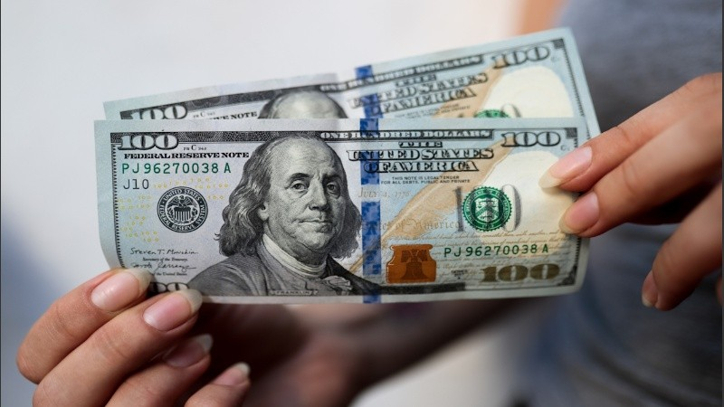

| MÀS POPULAR |
| Pullaro Gano conclaridad y quedo cerca de tener mayoria propia en la convencion constituyente |
Primer día sin cepo:
Así abrió el dólar que venden los bancos
Las primeras cotizaciones muestran una brecha importante entre los bancos públicos y los bancos privados.
El dólar oficial arrancó cotizando en el primer día sin cepo a $1.210 para la compra y $1.250 para la venta en el Banco Nación, lo que implica una devaluación del peso del 14%. También había bancos, como el Hipotecario, que lo pusieron a $1.300. En el ICBC, cotiza a $1307. En el BBVA cotizó a $1250.
Pero a las 10.40, en el Banco Nación, la cotización había bajado a $1.190 para la venta. Como la base de comparación para calcular la devaluación es el valor oficial del viernes, que fue a $1.090, la depreciación es del 9%.
Por su parte, dólar blue abrió en Rosario a $1.220 para la compra y $1310 para la venta, una baja de $60 frente al viernes.

En la mayoría de los bancos, los sistemas de homebanking vía app funcionan con alguna dificultad, complicando las operaciones. Con respecto a las cotizaciones del dólar futuro se mantiene a $1.200 para septiembre, lo que no muestra un escenario de corrida.
Tras la eliminación de las trabas cambiarias, desde hoy, las personas pueden adquirir en el circuito legal (bancos, casas de cambios) dólares sin límites de montos, siempre que sea a través de canales digitales de los bancos.
Vega Sebastian - DAW - UAI 2025